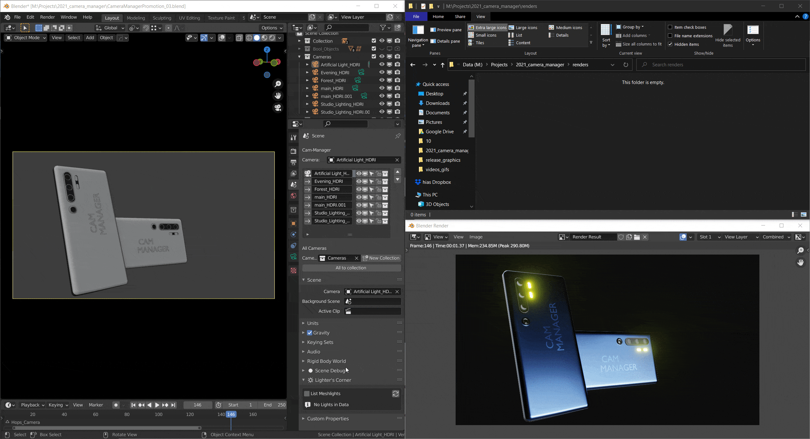

Presentation
Customize the overall lighting conditions by assigning individual world materials (HDRIs) to each camera. Further, you can adjust the exposure for each camera, compensating for darker camera angles or world materials.

Assign different world materials (HDRIs) to individual cameras. The background will automatically be swapped accordingly when switching cameras. This allows you to easily iterate different lighting conditions and evaluate materials.
This system is limited to world material and exposure. This means it's not suitable for more complex lighting changes that require different scene lights to be changed.
Render Slots
Don't overwrite your previous render from a different camera by accident. Assign different render slots per camera. Changing the camera will also change to the proper render sloth in the render viewer.

Assign different render slots easily to different cameras.

Save render slot per camera and render directly from the Cam-Manager window.
Save Renderings

Use the camera names to save the images direclty to the specified directory.